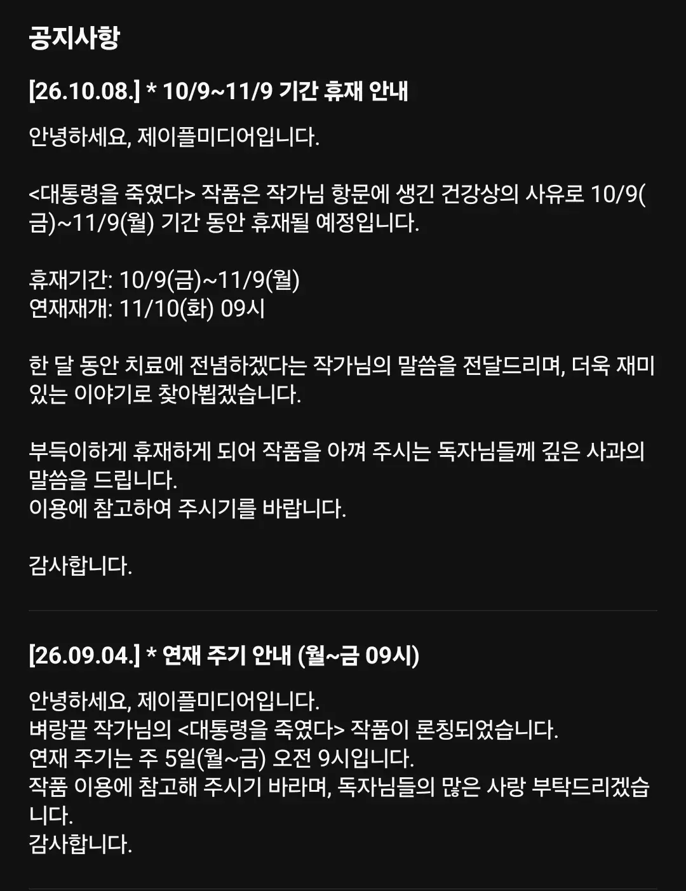

휴재 사유를 너무 오픈한 작가
댓글
그게 본인에게 더 행복일수도 있잖아요 위원장님
똥꾸멍이 안닫히면?
줄 서 이색기야
수치사 ㅋㅋ
앉아서 장문을 작문하느라 항문에 치질이 생겨서 연재에 차질이 생겼나
독자들의 의혹을 확실하게 해소시켜서, 응원할 수 밖에 없게 하긴 하네 ㅋㅋ

아니 근데 런칭 한달만에 한달휴재는 존나 타격크겠네
두달은 쉬는게
의자에 오래 앉아서 하는 직군은 꼭 저기랑 허리랑 손목이 문제더라
작가들 고질병=목디스크, 허리디스크, 건초염, 손목터널증후군, 치질 ㅋㅋㅋㅋㅋㅋㅋ 심하면 심장마비, 뇌졸중, 대장암
그래서 스탠딩 가능한 테이블/손목 피로 낮춰주는 더구나 키보드 필수임. 어떤 의자도 중간에 일어나는 행동을 뛰어넘진 못한다
작가의 사회적 죽음..
작가면 누워서 작업하면 되지 않나?
타이핑 반듯이 누워서도 할수있는데
키보드를 블루투스 양분할 키보드 사서 반듯이 누워서 양쪽손 위치에 키보드 각각 두고 타이핑 하면 될텐데
앉아서 해서 병걸리는건데 혼자 일하는 작가면 누워서 작업한다고 욕할사람도 없잖아
출근 10분만에 숙면하셨답니다
일하고 자는거 구분 안되면 불면증오거나 슬럼프올듯
일부러 작업 공간 침실이랑 따로 두는 사람도 있는데 서서 하는게 더 나아보임
그런 문제 생기면 자는 침대랑 일하는 침대를 다른방에 따로 두면될거같은데
방금 넌 작가를 죽였어
대통령을 죽여버린 작가와 작가를 죽여버린 플랫폼..
항문에 사정이 생겼네ㄷㄷ
괜한 의혹보단 오픈이 낫긴한데 읽고 나선 오픈 안하는게 낫지 않았을까하는 생각이 자꾸 스친다
건강 상의 문제 = 런칠거같음
항문 좆됨 = 진정성이 느껴짐
건강상문제 : 언제 오려나.. 이대로 연재종료하려나
항문상문제 : 회복하면 오겠구나
그냥 건강에 문제가 있다고 하지 항문은 씹 ㅋㅋㅋㅋㅋ 작가다 보니 치혈이나 치질 잘 걸릴 수 있을 거 같다만은
정확히 어디가 아프다고 말 안하면 런치려고 수쓰는 거짓부렁이다 보는 사람들이 너무 많아서, 정확히 항문이라 기재해서 아........하게 만들기ㅠㅠ
솔직히 저건 한달휴재라도 인정임ㅋㅋ
너무 오픈된 휴재사유라... 얼마나 오픈되었길래 클로즈 되는데 한달이나 걸린다는 건지...
대통령도 죽고 작가도 죽었다..
문피아는 진짜 언제쯤 구독제나옴?
항문은 빼도 될텐데 ㅋㅋㅋㅋㅋㅋㅋㅋㅋㅋㅋㅋㅋ
항문에 집중하겠다
아 그 항문작가? 이렇게 불릴뜻
항문이슈가 치질 치루 치핵이 아니라면 가만두지 않겠어